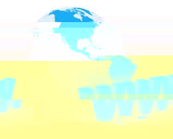

 Всесві́тня мережа (англ. World Wide Web, скорочено: WWW; також: всемережжя, веб або тене́та) — найбільше всесвітнє багатомовне сховище інформації в електронному вигляді: десятки мільйонів пов'язаних між собою документів, що розташовані на комп'ютерах, розміщених на всій земній кулі. Вважається найпопулярнішою і найцікавішою службою мережі Інтернет, яка дозволяє отримувати доступ до інформації незалежно від місця її розташування.
WWW — інформаційна система, якій не можна дати конкретного визначення. Наведемо лише деякі з епітетів, якими вона може бути позначена: гіпертекстова, гіпермедійна, розподілена, інтегруюча, глобальна. Нижче буде показано, що слід розуміти під кожною з цих властивостей у контексті WWW.
Користувачі автоматично переходять від однієї бази даних (сайту) до іншої за допомогою гіперпосилань.
Кількість серверів WWW постійно зростає, а швидкість росту WWW навіть більша ніж у самої мережі Internet. WWW — найрозвиненіша технологія Internet, вона вже стала масовою. Перспективи розвитку — необмежені.
Senenko Vitalik Org. Kyiv. 2015.